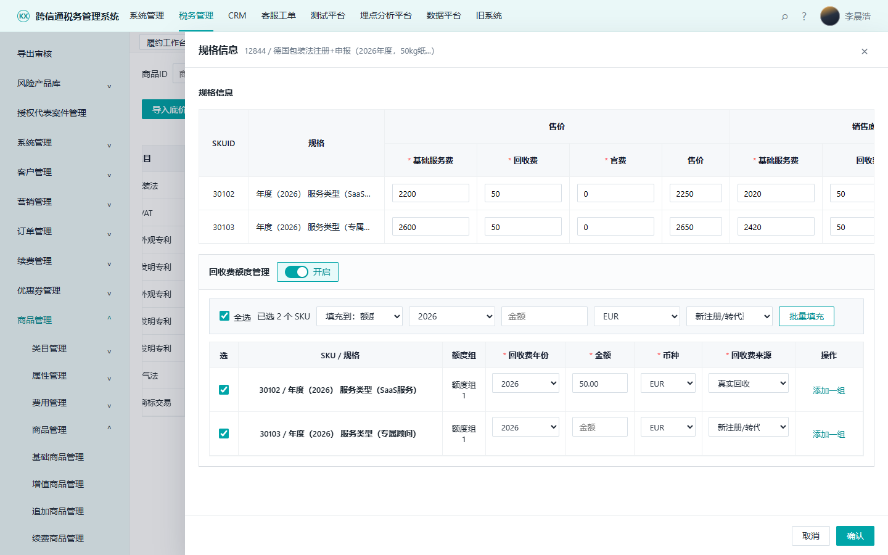
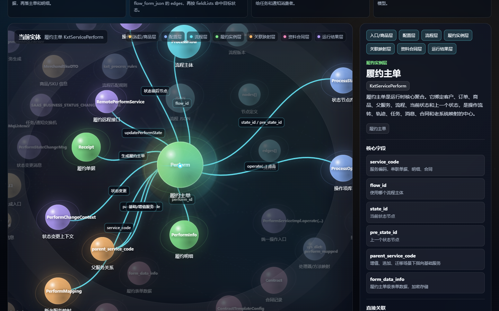
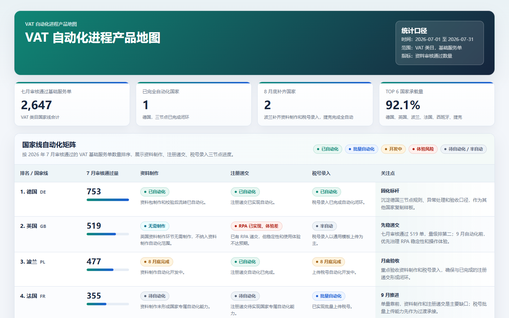
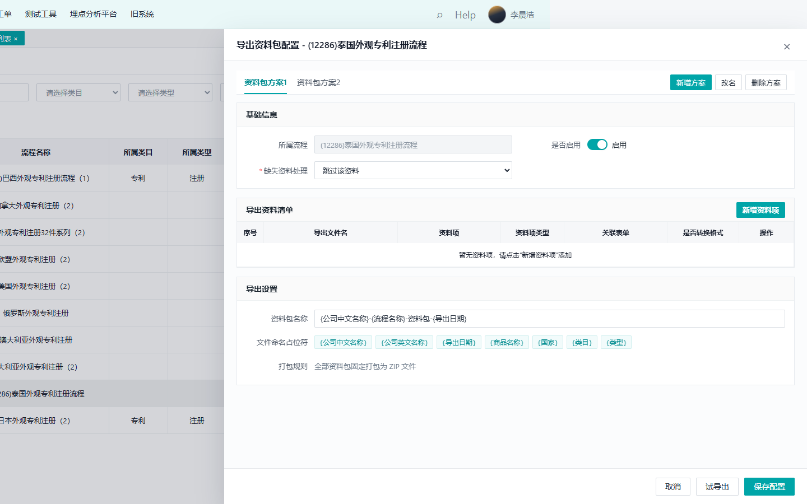

真实上下文
继续读取仓库、数据、现有页面、历史文档与已确认产物。
从 DEMO 到方案落地，一套把模糊问题持续推进为可体验、可讨论、可验证产物的工作方法。
每次任务尽量同时满足四个条件，AI 才真正进入产品工作。
继续读取仓库、数据、现有页面、历史文档与已确认产物。
落到 DEMO、PRD、关系图、分析结果或可访问页面，而非停留在答案。
入口、字段、文案、保存、数据口径和发布地址都能被检查。
在同一工作空间增量纠偏，并同步相关产物与线上版本。
这条主路径保留从问题、事实到后续使用与持续纠偏的完整闭环。
同一业务，给领导看的地图和给研发评审的方案，不应该拥有相同的信息结构。
AI 可以补全一个合理世界，但产品经理必须区分什么已经存在、什么只是方案、什么仍待确认。
DEMO 不是固定关卡；代码和数据取证也不是 PRD 完成后的补课。
DEMO 不只是像设计稿，而是要覆盖足够多的状态，让关键决策能被真实触发。
参考基准先排优先级，再把“像现有系统、不要太拥挤”拆成五类可执行条件。
把模糊反馈拆成三张清单，才能让修改边界稳定、可追溯。
检查路径要与验收标准一一对应，并留下可复核的操作与截图证据。
这个案例真正收敛的不是页面颜色，而是入口、字段和保存语义。

不是把页面文字抄进文档，而是把交互背后的规则、动作和交付边界显性化。
简单需求可以合并章节，但范围、异常和验收不能省；复杂需求再按页面或能力拆分。
关键规则至少回答五个问题，开发、测试和产品才能面对同一套边界。
SKU 解决交互分歧；下面三个补充案例分别展示代码、数据与复杂规则怎样进入同一工作空间。

只保留能从代码实体、服务和事件中找到依据的关系，避免把规划能力画成现状。

口径从“新服务单量”改为“7 月审核通过的基础服务单”时，必须回到查询层重算。

把流程、表单、模板、占位符、图片和翻译件问题重组成可配置、可试导出、可验收方案。
并非每个任务都会使用全部工具；选择标准只有一个：能否让当前结论更可靠、更容易协作。
brainstorming Skill
问题清单、备选路径、逐段确认
仓库检索与代码阅读
MySQL / 文档 / Excel / PDF
HTML / CSS / JavaScript
飞书 PRD、关系图、分析页面
Chrome / Playwright
文档回读、数据复核、截图证据
Git / GitHub Pages
评审、研发、测试、运营持续使用
少问一句“你觉得该怎么做”，多给一句：这是工作空间、事实来源、目标产物和验收标准，请把它真正做出来并验证。